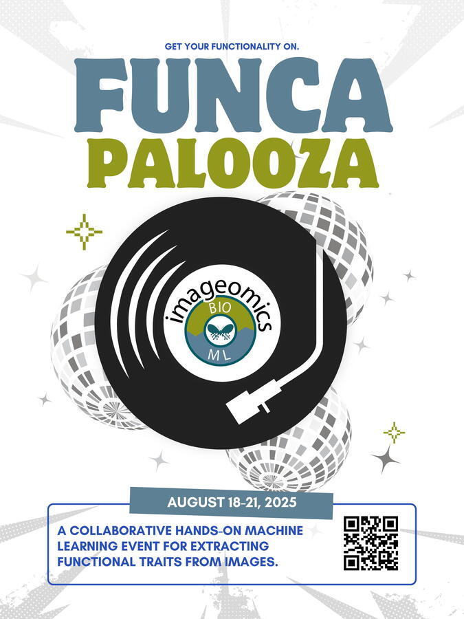

We’re turning up the volume on science and innovation with FuncaPalooza 2025, a one-of-a-kind workshop hosted by the Imageomics Institute from August 18–21, 2025, at The Ohio State University in Columbus, Ohio. This 3.5-day collaborative jam session will bring together researchers, developers, and domain scientists to explore how we extract functional trait data from images—bringing a whole new groove to ecology and computer vision.
At its core, FuncaPalooza is about answering one big question: Can we extract meaningful biological traits from images using AI and ML? From the shape of a beak to the timing of a flower bloom, functional traits tell us how organisms interact with the environment. Using cutting-edge tools like newly-announced BioCLIP 2, as well as Prompt-CAM, and Static Segmentation by Tracking (SST), this workshop will explore how computer vision can advance ecological research and enable new scientific discoveries.
We’re calling on:
-
AI/ML researchers interested in advancing computer vision tools for ecological data.
-
Ecologists, evolutionary biologists, and environmental scientists working with image-based datasets.
-
Software developers and data engineers with experience in FAIR data standards.
-
Postdocs, graduate students, and advanced undergraduates exploring the intersection of science and tech.
FuncaPalooza isn’t a conference or hackathon—it’s a hands-on, collaborative environment where teams co-create code, datasets, workflows, and solutions. You'll leave with new skills, fresh collaborators, and real outcomes to benefit both your research and the scientific community.
Why It Matters
Understanding functional traits is essential to addressing global challenges like biodiversity loss, climate change, and ecosystem health. FuncaPalooza 2025 offers a concrete, productive space to advance interdisciplinary science with social and environmental impact. Together, we’ll create new tools to explore how life works—and how it adapts.
Important: Apply by June 23, 2025
Apply to participate
Explore the event on GitHub
Dates: August 18–21, 2025
Location: Pomerene Hall, The Ohio State University
Travel support is limited—apply early!
Event Organizers:
-
Elizabeth Campolongo – The Ohio State University
-
Alyson East – University of Maine
-
Marta Jarzyna – The Ohio State University
-
Hilmar Lapp – Duke University
-
Sydne Record – University of Maine